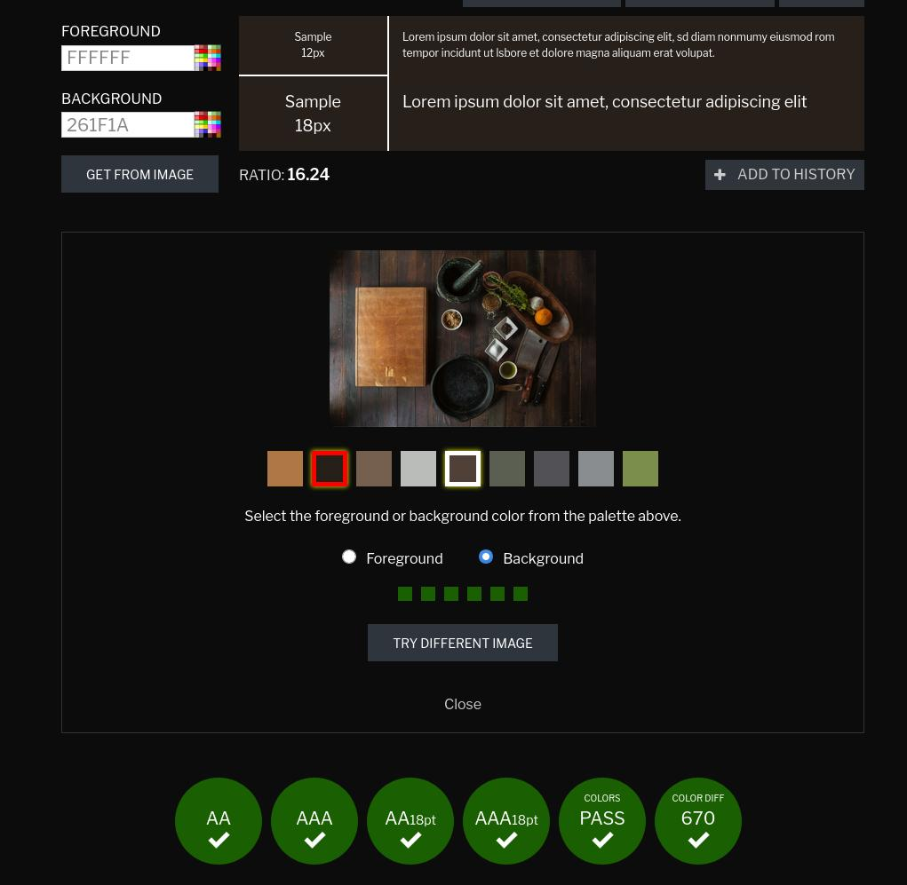

Min telefonkamera är verkligen dålig i vissa ljus, så om någon är otydlig kan du skicka ett mail, så försöker jag skicka en bättre
| Vecka | På lektionen | Utanför lektionen |
|---|---|---|
| 4 | Skapar ett githubkonto och gör en skiss för indexsidan samt planeringar för de andra sidorna | Någon till skiss så att jag kan programmera nästa lektion kanske |
| 5 | Börjar skapa indexsidan så att jag kan se tydligare hur hemsidan kommer se ut, och eventuellt upptäcka designmisstag (designer som är för svåra att skapa), innan jag gör alla skisser. | Gör skisserna för de andra två sidorna. |
| 6 | Färdigställer "om oss" sidan utifrån skissen som gjordes hemma. | |
| 7 | ||
| 8 | ||
| 9 | ||
| 10 | ||
| 11 | ||
| 12 |
I brist på lektion använder jag den här rubriken för att fylla i vad jag gjort efter den sista lektionstiden.
Idag har jag implementerat den sista skissen i websideform. När jag började göra sidan insåg jag att den var mer eller mindre likadan som de två andra, så jag avvek lite från skissen i placeringar av elementen. Jag utgick fortfarande från skissen till nivån att man fortfarande kan se väldigt tydligt var designen härstammar från. Alla element i skissen finns även på hemsidan, men deras positioner har flyttats lite. Eftersom skissen och sidan fortfarande är väldigt lika bestämde jag mig för att inte göra en ny skiss då det är just en skiss och inte en teknisk ritning. Jag stylade sidan med samma färger som jag använt på de andra två sidorna vilket jag tycker ser ganska bra ut. Överlag skulle jag säga att den här sidan gick snabbare att implementera än de andra två eftersom jag har blivit mer bekväm med html och css, vilket inte kan vara någonting dåligt.
Jag har även skapat loggan för DLM i krita. Eftersom jag därför inte kan skicka med någon psd fil skickar jag istället en video där jag visar att jag har använt lager och ickedestruktiv redigering.
Jag har också ändrat lite i indexsidans css eftersom det visade sig att den inte var så snygg på större skärmar (den var snygg på min 24", men inte på min 27"). Anledningen till att den var fulare på större skärmar är att indexsidan (till skillnad från de andra två) inte har en bestämd höjd, utan istället låter alla element ta upp så mycket plats de behöver. Jag valde att göra så eftersom "så fungerar det" sektionen inte fick plats utan att man skrollade. Mina alternativ var därför att antingen göra just den sektionen skrollbar, eller att göra hela sidan skrollbar, men eftersom jag aldrig hade provat att göra en hemsida som var större än en skärmhöjd valde jag att göra hela sidan skrollbar för att prova något nytt och lära mig mer om hur css fungerar. Problemet jag upptäckte var att det fungerar väldigt bra så länge skärmytan inte räcker till, men om man har en skärm där sidan faktiskt får plats slutar den innan botten på skärmen (vilket gjorde att den gröna bakgrundsfärgen helt plötsligt blev vit). Jag löste problemet lite halvt genom att göra bakgrundsfärgen på bodyn till grön istället för diven som innehåller gridet, men det löser bara halva problemet eftersom footern fortfarande kommer för tidigt. Jag har inte lyckats komma på något bra sätt att sätta en bestämd höjd på sidan och få plats med informationssektionen samtidigt, så även om min lösning inte är optimal är den det bästa jag kan komma på.
Jag har även ritat Gården Ram-Sej och hans restauranglogga till tävlingssidan, men de är mest fillers som man inte behöver lägga någon vikt vid.
När jag kollade igenom instruktionerna en sista gång såg jag att man tydligen bara skulle ha ett gemensamt css-dokument för alla tre sidorna vilket jag helt hade missat. Jag tänkte att det skulle vara naturligt att använda tre olika dokument eftersom de har tre olika layouter, men uppenbarligen inte. Lyckligtvis hade jag utnyttjat cascading-delen av css när jag skrev alla selektorer, så att sätta ihop alla regler till ett dokument var inte jobbigare än att byta id på container-divarna från "container" till "index-container", "about-container" och "competition-container", samt använda find and replace på mina css filer för att se till att filernas respektive selektorer bara gäller för sidans innehåll. Jag tycker fortfarande det känns rimligare att bara ha tre olika stylesheets eftersom nästan ingenting utom bak och förgrundsfärg är gemensamt mellan dem (och förgrundsfärgen måste man applicera individuellt på elementen ändå), men nu har jag följt uppgiftsbeskrivningen i alla fall.
All text på sidan (utom titeln i index.html) är svart på antiquewhite vilket ger 100% godkänt från contrastchecker:
Titeln är vit färg på en bild, så det går inte riktigt att kolla mot en specifik färgnyans, men lyckligtvis har contrastchecker en funktion där man kan hämta färger från en bild och om man provar med den bruna och gråa nyansen (eftersom de andra delarna av bilden inte används) så är även det 100% godkänt.
Jag har i huvudsak utvecklat sidan med firefox så det finns inte mycket mer att säga än att allting ser ut som det är tänkt (index.html är två bilder eftersom den behöver skrollas).

Chrome gav mig ett problem på indexsidan jämfört med firefox. Css-gridets rader på indexsidan var placerade lite annorlunda i chrome. Efter en stund kom jag fram till att det var för att jag hade glömt ta bort css-propertyn grid-template-rows från containerelementet (efter att jag bestämde mig för att elementen skulle expandera dynamiskt). Av någon anledning valde firefox att ignorera den medan chrome följde den, men om man tog bort den fick man ett lika utseende på båda indexsidorna.
En annan skillnad jag märkte mellan chrome och firefox var att listorna var lite annorlunda. I chrome var punkterna mindre, och det var mer mellanrum mellan punkterna och texten. En googlesökning visar att detta helt enkelt är någonting annorlunda mellan olika webläsare och att det inte finns så mycket att göra åt saken. Om du vill kan du läsa en bugrapport i chromium (kärnan till chrome) som beskriver problemet här.
Jag fick även ett problem på om-oss sidan i chrome jämfört med firefox. I firefox placerades de båda loggorna i headern snyggt på sina platser, men i chrome stretchades de ut över hela headern vilket blev oerhört fult:
Det visade sig att anledningen till detta var att jag aldrig explicit valde storlek på bilderna vilket ledde till att webläsarna använde deras default. Firefox använde "height: 100%", medan chrome använde "width: 100%". Genom att lägga till en explicit regel i mitt css-dokument lyckades jag få en likadan header i båda webläsarna.

Samma problem fast mindre tydligt fanns även i sektionen med utmärkelser. Chrome valde att använda "width: 100%" istället för "height: 100%" vilket enkelt löstes med en explicit regel.
Den tredje sidan var redan likadan.
Här är bilderna från chrome efter mina fixningar: